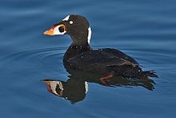
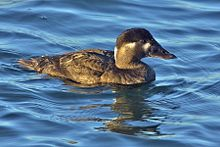
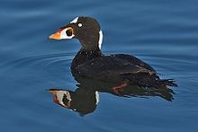
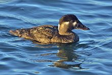

| Surf Scoter | |
|---|---|
|  | |
| Adult male | |
|  | |
| Adult female | |
| Conservation status | |
| Binomial name | |
| Melanitta perspicillata (Linnaeus, 1758) |
| Surf Scoter | |
|---|---|
|  | |
| Adult male | |
|  | |
| Adult female | |
| Conservation status | |
| Binomial name | |
| Melanitta perspicillata (Linnaeus, 1758) |
The Surf Scoter (Melanitta perspicillata) is a large sea duck, which breeds in Canada and Alaska. It is placed in the subgenus Melanitta, along with the Velvet and White-winged Scoters, distinct from the subgenus Oidemia, Black and Common Scoters.
It winters further south in temperate zones, on the coasts of the northern USA. Small numbers regularly winter in western Europe as far south as Great Britain and Ireland. Some birds may over-winter on the Great Lakes. It forms large flocks on suitable coastal waters. These are tightly packed, and the birds tend to take off together.
The lined nest is built on the ground close to the sea, lakes or rivers, in woodland or tundra. 5-9 eggs are laid. An egg may range from 55-79 grams (1.9-2.8 oz) and average 43.9 mm (1.7 inches) in breadth and 62.4 mm (2.5 inches) in length. Occasional (and likely accidental) brood mixing between different females occurs in areas with high densities of nests. Growth is relatively rapid and the incubation period is about 28 to 30 days. The offspring will fledge independently at about 55 days.
The adult female averages about 900 grams (2 lbs.) and 44 cm (17 inches) in length, while the adult male is on average 1050 grams (2.3 lbs.) and 48 cm (19 inches) in length, making this the smallest species of scoter on average. It is characterised by its bulky shape and large bill. The male is all black, except for white patches on the nape and forehead. It has a bulbous red, yellow and white bill. The females are brown birds with pale head patches. The wedge-shaped head and lack of white in the wings helps to distinguish female Surf Scoters from female Velvet Scoters.

Adult scoters of this species dive for crustaceans and molluscs, while the ducklings live off any variety of freshwater invertebrates.
In November, 2007, an oil spill in San Francisco harbour oiled and killed thousands of birds including many Surf Scoters. About 40 per cent of the birds affected were from this species. Scientists said that while the species is not endangered it has declined 50 to 70 per cent over the past 40 years and this spill could decrease populations since most of the affected birds are healthy adults.[2]

{kind=link}
{kind=link}